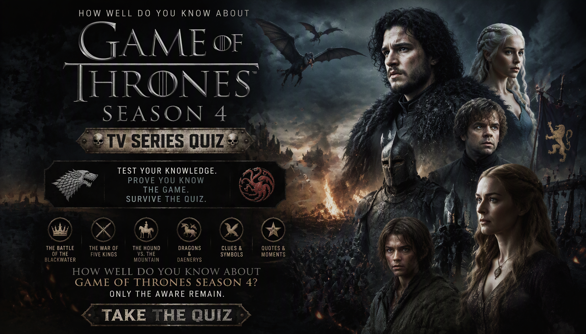

GAME OF THRONES • SEASON 4 • TV TRIVIA
Game of Thrones Season 4 Quiz
Think you know Game of Thrones Season 4? Test your knowledge of Tyrion Lannister, Joffrey Baratheon, Arya Stark, Sansa Stark, Daenerys Targaryen, the Night's Watch and the battle at Castle Black.
Every question has four possible answers, but only one is correct. Remember the betrayals, battles, character revelations and shocking events of Season 4 to prove your knowledge of Westeros and Essos.
This quiz contains major plot details and spoilers from Game of Thrones Season 4.


ABOUT THE QUIZ
The Game of Thrones Season 4 Quiz is a 35-question trivia challenge about the characters, political conflicts, battles and major events of the fourth season of the fantasy drama series.
Test your memory of Tyrion Lannister's trial, Joffrey's wedding, Arya and Sansa Stark's journeys, Daenerys Targaryen's rule in Meereen, Oberyn Martell's arrival and the Night's Watch defending Castle Black.
Game of Thrones Season 4 Details
Series: Game of Thrones
Season: 4
Genre: Fantasy drama
Key Characters: Tyrion Lannister, Arya Stark, Sansa Stark, Daenerys Targaryen, Jon Snow, Jaime Lannister, Oberyn Martell and Cersei Lannister
Key Events: The Purple Wedding, Tyrion's trial, the duel between Oberyn Martell and Gregor Clegane, the attack on Castle Black and Arya's journey to Braavos
Source Material: Primarily the third novel in George R. R. Martin's A Song of Ice and Fire series, A Storm of Swords, with some material from later books.
WHAT THIS QUIZ COVERS
The quiz tests your knowledge of character identities, important objects, dialogue, political schemes, battles and major revelations featured in Season 4.
King's Landing and the Lannisters
Recall Joffrey's death at the Purple Wedding, Tyrion's trial, Shae's testimony, Tywin Lannister's final words and the swords associated with the Lannisters.
The Starks and Their Journeys
Test your memory of Arya's journey, Sansa's identity in the Vale, Brienne's mission and the events that shape their paths.
Daenerys and Essos
Remember the events in Meereen, the death of Hazzea, Daenerys's dragons and the people surrounding the Mother of Dragons.
The Night's Watch and the Wildlings
Review the mutiny at Craster's Keep, the Thenns, Mance Rayder's plans and the wildling attack on Castle Black.
HOW THE QUIZ WORKS
The quiz contains 35 questions. Each question has four possible answers, with exactly one correct answer.
Every correct answer earns 1 point. Incorrect answers earn 0 points. Your final score is converted into a percentage out of 100%.
Your result reflects how well you remember the characters, political conflicts, battles and events covered by this Game of Thrones trivia challenge.
Quiz Navigation
Starting the quiz
Select START QUIZ on the opening screen to begin. The first question appears with four possible answers.
Selecting an answer
Select the option you believe is correct. Your choice is saved, and the quiz automatically advances to the next question shortly afterward.
Next and Back buttons
Use Next to move forward or Back to revisit a previous question. Your selected answers are saved as you move through the quiz, so you can review or change them.
Finishing the quiz
Answer all 35 questions. On the final question, submit your answers to view your score, percentage and Game of Thrones knowledge result.
Try Again and Challenge Friends
Select TRY AGAIN to replay the quiz. You can also use SHARE MY RESULT or CHALLENGE YOUR FRIENDS to share your result.
FAQ
How many questions are in the quiz?
There are 35 questions, each with four possible choices and one correct answer.
What is the maximum score?
The maximum score is 100%. Each correct answer contributes 1 point before the result is converted into a percentage.
What topics are covered?
The quiz covers the characters, swords, political schemes, battles, dialogue and major events of Game of Thrones Season 4.
Can I take the quiz again?
Yes. Select TRY AGAIN after viewing your result to start another attempt.
Can I challenge my friends?
Yes. Use CHALLENGE YOUR FRIENDS after completing the quiz to share it with others.
Spoiler Warning
This quiz contains spoilers for Game of Thrones Season 4, including character deaths, betrayals and major plot revelations.
Consider watching the season before taking the quiz if you want to avoid spoilers.